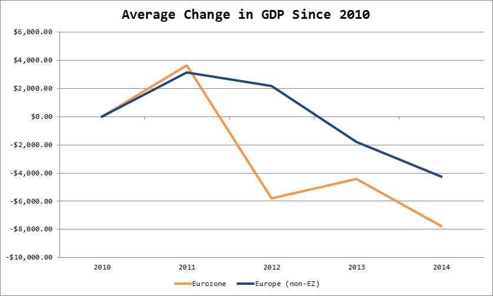

hide forever |
hide once
hide forever |
hide once
A recent blog post by Paul Krugman contained a fun little graph comparing the GDP per capita of Sweden and Finland since the late 1980s.
Sweden is not a member of the Eurozone (and so does not use the Euro but rather its own currency, the krona). Meanwhile, the Finns have been using the Euro since the very beginning.
Which one would you rather have lived in the past few years? Since, say, 2008 or so.
If you said Sweden, you’re probably not alone.
Unsurprisingly, Sweden has outperformed its neighbor to the east economically recently after very similar economic results from 2000 until the financial crisis hit.
Krugman’s explanation, which probably contains a lot of truth, is that Sweden, as a non-Euro country, was free to conduct independent monetary policy in response to the Global Financial Crisis. Finland, on the other hand, was forced to go along with whatever the central bankers at the ECB wanted, which was not necessarily right for Finnish economic conditions.
After reading Krugman’s post, I found myself wondering if the data showed the same pattern for the rest of the Eurozone. I figured we would see the same trend when comparing European economies that are not on the Euro with Eurozone members.

Not surprisingly, that’s exactly what we see. What’s shocking is the magnitude of the disparity. Eurozone members lost almost twice as much in GDP between 2010 and 2014 as their neighbors that chose not to join the Euro. 2012 was a particularly bad year for the Eurozone (the Greek debt crisis started in late 2009).
I ran a simple regression of the change in a country’s GDP between 2010 and 2014 on its being located in Europe and its being a member of the Eurozone. Although being a European country doesn’t seem to have affected GDP growth in that time period, being in the Eurozone certainly did–negatively. We would expect a Eurozone economy to shrink by $9,500 in that time period compared to a non-EZ, non-European nation, a result which is statistically significant.
Be warned that I did not control for confounding variables. Even so, I am confident that the regression results are getting at something real. Initially, I thought it was possible that Eurozone members’ economic ties to the United States and the global banking sector helped explain the results, but Canada, Britain, and Switzerland meet those criteria better than any EZ nation. So I think we really are seeing the destructive impact of giving up independent monetary policy.
That’s not to say the Euro is a bad idea. As a political project, it makes sense. In economic terms, it is workable if labor markets become more integrated across the continent. Currently, though, I would rather not have been on the Euro the last few years–unless, of course, I lived in Germany.
Campaigns reported their first quarter fundraising numbers to the FEC today, and those numbers are now available online for us to play with. I thought I would map out where the candidates are raising money from and see how they compare.
Unsurprisingly, Hillary and Bernie raise money largely from the same locations, only Hillary raises much more of it. But what about that huge blue dot somewhere in New England? That’s Somerville, Massachussetts, where Bernie has apparently raised $2,672,467.65. No, he hasn’t actually raised that much. Several Democratic fundraising technology companies, including NGP VAN and ActBlue, are located in Somerville (disclosure: I am interning as a software engineer for NGP VAN in Washington, DC this summer). That sum appears to be everything he has raised through ActBlue, which acts as a bundler for reporting purposes rather than reporting individual donations.
Meanwhile on the Republican side, it almost looks like Jeb Bush and Ted Cruz are raising money from the exact same people. That’s why the entire map is pretty much an orange-red blob. Mike Huckabee is strong in Arkansas and the South, and pretty much no where else. Rand Paul actually looks weaker, with a base in Kentucky but nothing exceptional elsewhere. Rubio is obviously strongest near Miami and doing decently across the nation, but I was struck by his ability to raise funds in coastal areas including all along the Gulf Coast and the Carolinas, and in California. Perhaps that says something about who he appeals to, but I’m not sure exactly what that something is yet.
Generally, I wanted to see whether and how racial disparities are reflected in the data. Members of minority racial groups know through their lived experiences that the relationship they have with the authorities are not the same that white people do. Psychological research confirms that Americans are apt to perceive young, Black men as more aggressive and dangerous than their white counterparts.
Unsurprisingly, the majority of police shootings occur when subjects are armed, especially when armed with a gun.
But I was curious about the unarmed shootings. My hypothesis was that if police officers tend to see Blacks and Hispanics as threatening and aggressive while giving whites the benefit of the doubt, members of those minority groups would be much more likely to shot by police while unarmed.
A cursory look at the data supports this hypothesis. Blacks and Hispanics who were shot by the police are several times more likely to have been unarmed when they were shot. Native Americans and members of other races are also more likely to have been unarmed when shot.
To determine this, I performed a binomial logistic regression on being unarmed when shot by police with race as my independent variable. I controlled for the other factors included in the Washington Post's dataset (location, age, gender, whether one had visible signs of mental illness). As shown in the table below, I found that being Black, Hispanic, or "other" significantly increases the chances that a police shooting victim was unarmed when shot (compared to a white victim). Specifically, we expect a black person's log-odds of being unarmed when shot to be 0.79 higher than a white person's, all else equal, and we expect a Hispanic person's to be 1.20 higher.
Unfortunately, the data support the conclusion I was afraid I would have to draw, that racial bias in policing is real and deadly. While there may be other explanations for this trend, none seem to explain the phenomenon as simply and visibly. I can only hope that the increased attention paid in this nation to the issue of police violence toward minorities is a sign of progress to come rather than a momentary burst of awareness, soon to be forgotten.
My SPSS data file, output, and Tableau visualization project are available on Github. Feel free to comment or email me with questions, and share with attribution and a link.
Yesterday, National Journal released its TwentySixteen Staffer Tracker, a tool that allows us to see a list of each of the 2016 presidential candidate’s staffers (albeit an incomplete one). Although it shows the most popular former workplaces for each campaign’s staff, I felt like some more detailed data analysis and visualization was in order. Specifically, I wanted to see how the campaigns compare in terms of gender breakdown and staffer type (field, comms, etc.).
I aggregated the data for the two major Democratic campaigns–Hillary Clinton and Bernie Sanders–and six top Republican campaigns–Jeb Bush, Marco Rubio, Rand Paul, Ted Cruz, Scott Walker, and of course Donald Trump. Then, I coded each staffer with a gender, which I assigned based on their names (so there may be some minor mistakes, probably no more than one person per candidate on average). Next, I looked at each staffer’s title to see which part of the campaign they fell into.
Note that some staffers do not fit squarely into one box. For example, it was difficult to tell whether many state-level staff would best be coded as “field” or “adviser/strategy.” For the most part, I went with “field” when coding people like state directors, since it was a good way of getting a look at the candidate’s presence on the ground. Meanwhile, I took “adviser/strategy” to mean primarily a high-level, national campaign adviser. Your mileage may vary, and I welcome suggestions and comments on this page or at michael.j.irvine@gmail.com. Here’s what I found:
Hillary Clinton’s campaign clearly has the edge over Bernie Sanders in terms of gender equality, although part of that is because Hillary has many times more staffers working for her than Bernie does. Nevertheless, Bernie is lagging Hillary in the female vote, and the gender gap in his campaign may be part of the problem (or perhaps a result of it).
The Republican field is about what you would expect. Staffers are predominantly male, with Ted Cruz and Marco Rubio tied for the “most women” award with 22.2% each. Not great numbers, and much lower than Hillary’s 42.2%. Republican candidates might benefit from hiring smart female staffers overlooked by the other campaigns (or perhaps there simply are none willing to work on Republican campaigns!).
Not surprisingly, Donald Trump has exactly zero women on his campaign. Rand Paul also clocks in at nil. Libertarianism notoriously has its base among white men, and Paul’s campaign seems to be no exception to this rule, which is unfortunate if he hopes to appeal to a larger audience in the general election or even in the primary.
The data confirm what reporters and Democratic campaign types have known for a while–Hillary’s campaign is big on communications, while Bernie Sanders is focusing on running field operations in a few key early states like Iowa and New Hampshire. The advantage here goes to Hillary. For all the credit Bernie’s campaign deserves for its surge in those early states and10,000 person rallies, it will be hard to get the message out to a wider audience with only one digital person, one comms staffer, and one person making ads.
Bernie will almost certainly have to hire more comms staff soon–in this day and age, it’s just unacceptable to send out an email about Citizens United but nothing about Obergefell v. Hodges on the day of the Supreme Court’s gay marriage decision. Similarly, his campaigntweeted about Medicare half an hour after the U.S. Women’s Soccer Team won the World Cup, and never said anything about the American victory.
Meanwhile, Hillary’s campaign has been incredibly effective on social media, especially with respect to gay marriage. By all measures, Hillary is running an excellent social media campaign (see her comment on the Humans of New York Facebook page). Without a serious investment in social media, the Bernie Sanders campaign will soon be left behind.
A few things jump out when looking at the Republican field’s breakdown of advisers. Jeb Bush’s campaign, Rand Paul’s, and Scott Walker’s all look similar, with an emphasis on high-level advisers and strategists. This makes sense for Jeb, given his family network, but it is somewhat more surprising for Paul and Walker, who are more insurgent-type candidates.
Notably, Rand Paul and Scott Walker only have one communications person apiece, and a similarly lackluster digital presence. This would explain why I have seen next to nothing about their campaigns on social media, although Walker has been successful at getting his name into the press.
Rubio and Cruz’s emphasis on state-level field operatives is interesting, although I can’t say it seems to be paying dividends yet. Perhaps more intriguing is Jeb Bush’s five policy advisers, more than any other candidate in the race. This could either be an attempt to bone up on his policy chops since he’s been out of office for some time or a reflection of his actual love for policy (which certainly seems to be what his campaign wants us to think). Perhaps it reflects a confidence that he will win and be President in a couple of years. Time will tell whether this is a smart move in a crowded Republican primary.
Lastly, a word about Donald Trump is in order. I was not expecting him to have as strong a state-based presence as he does. Although his campaign is clearly less well-established than the other candidates, this may signal his seriousness about competing on the ground and not just in the media.
There are a few easy conclusions to draw from this data. First, Bernie Sanders needs to invest in communications and digital staff to remain competitive. Every moment wasted is a lost opportunity to build grassroots support among potentially pivotal groups. This is especially true with respect to young people, who could be a great base of support for Bernie’s campaign, but who largely (anecdotally speaking) view Hillary as more in touch with their lives, especially on social issues.
On the Republican side, Donald Trump is potentially more serious than many people think. In general, no candidate seems better positioned than Jeb Bush, whose large warchest has allowed him to hire staff for essentially every facet of the campaign.
{kind=link}
{kind=link}
{kind=link}
{kind=link}
{kind=link}
{kind=link}
{kind=link}
{kind=link}
{kind=link}
{kind=link}
{kind=link}
{kind=link}
{kind=link}
{kind=link}
{kind=link}
{kind=link}
{kind=link}
{kind=link}